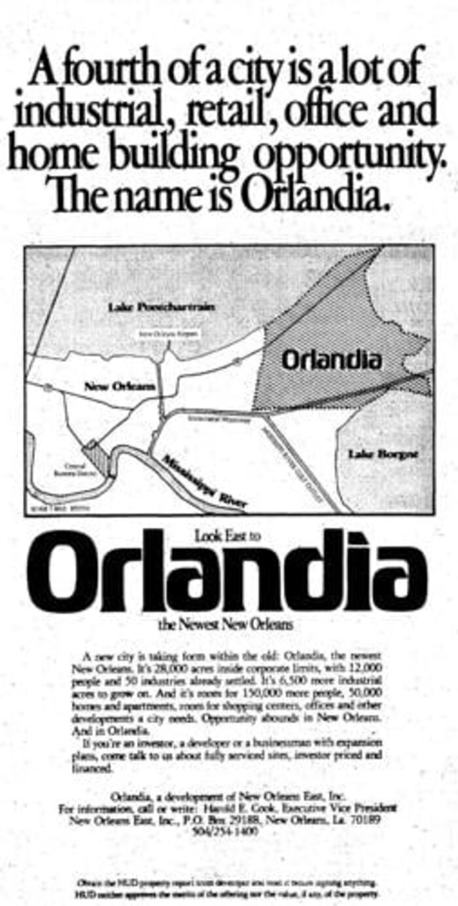

Proposed — application in progress
1920s buildingshistoric by 1970
1976 corridorhistoric by 2026
Today2026

Important
Honest numbers
Where we are today: $0.00
Historic Tax Credit program investment, 2017–24. Zeros shown are real zeros — they are the case for the district, not a decoration.
The math, on a real budget
Who qualifies
Six requirements. One door the district opens.
Plain terms
What the designation does — and doesn't.
It is
It is not
The footprint
Smaller map. Sharper aim.
Drag the slider: from the earlier broad, diffuse boundary to the focused corridor — Crowder Boulevard to Bullard Avenue, anchored by Joe W. Brown Memorial Park and the Louisiana Nature Center.


Crowder Blvd
~3 walkable miles
Bullard Ave
Community assets & corridor buildings
The buildings crossing the historic line.
Seven documented commercial parcels and two anchors. Each card opens a full record — history, ownership, status, and significance — built to grow as the asset assessment proceeds.
What rehabilitation looks like